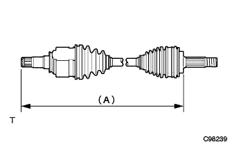

フロントドライブシャフト 取り付け |
| 1. フロントドライブシャフトASSY点検 |
ジョイント部を上下、左右、軸方向に動かした際、スムースに作動し、著しいガタがない事を点検する。
ジョイントブーツの亀裂、損傷およびグリース漏れがないことを点検する。
|  |
フロントドライブシャフトが下記の寸法になっていることを確認する。
| エンジン | アウトボード径 | LH | ＲＨ |
|---|---|---|---|
| 1NZ | - | 574.3±5ｍｍ | 813.3±5ｍｍ |
| 2NZ | 外径78ｍｍ | 572.3±5ｍｍ | 813.3±5ｍｍ |
| 2NZ | 外径85ｍｍ | 574.3±5ｍｍ | 813.3±5ｍｍ |
 |
ノギスを使用して、アウトボードジョイントの外径を測定する。(エンジン形式2NZ-FE)
| 2. フロントドライブ シャフトASSY LH取り付け |
インボードジョイントASSY LHのスプライン部にオートフルードタイプT-IVを塗布する。
 |
シャフトのスプラインをかん合させ、ブラスバーおよびハンマーを使用して、ドライブシャフトASSY LHを挿入する。
| 3. フロントドライブ シャフトASSY RH取り付け |
| 4. フロントアクスルASSY LH取り付け |
フロントアクスルASSYを車両外側に押して、アクスルASSYにドライブシャフトASSYのスプラインをかん合させ、挿入する。
| 5. フロントアクスルASSY RH取り付け |
| 6. ショック アブソーバASSY FR LH取り付け |
 |
アクスルASSYをショックアブソーバASSYに取り付け、車両前方からボルト2本を挿入し、ナット2個を締め付ける。
| 7. ショック アブソーバASSY FR RH取り付け |
| 8. タイロッド エンドSUB-ASSY LH取り付け |
タイロッドエンドをステアリングナックルに取り付け、キャッスルナットで締め付ける。
新品のコッターピンを取り付ける。
| 9. タイロッド エンドSUB-ASSY RH取り付け |
| 10. スタビライザ バー FR取り付け |
クッションリテーナNo.1を2個、クッション2個およびスタビライザバーを図の向きになる様に取り付け、ナットで締め付ける。
 |
スタビライザボルトをスパナ(10mm)で固定し、新品のナットを締め付ける。
| 11. フロントディスク取り付け |
| 12. フロントデイスクブレーキキヤリパASSY LH取り付け |
 |
ボルト2本でデイスクブレーキキヤリパASSYをステアリングナックルに取り付ける。
| 13. フロントデイスクブレーキキヤリパASSY RH取り付け |
| 14. スピード センサ FR LH取り付け |
ボルトで、スピードセンサワイヤおよびフレキシブルホースをショックアブソーバASSYに取り付ける。
 |
クリツプをショックアブソーバASSYに取り付ける。
 |
ボルトで、スピードセンサＦＲをステアリングナックルに取り付ける。
| 15. スピード センサ FR RH取り付け |
| 16. フロントアクスル シャフト ナット LH取り付け |
ソケツトレンチ(30mm)を使用して、新品のハブナットを取り付ける。
 |
タガネおよびハンマーを使用して、ナットをかしめる。
| 17. フロントアクスル シャフト ナット RH取り付け |
| 18. フロントタイヤ取り付け |
| 19. エンジンアンダ カバー RH取り付け |
スクリュー2個およびボルト2本で、エンジンアンダーカバーRHを取り付ける。
ナットを、締め付ける。
| 20. エンジンアンダ カバー LH取り付け |
スクリュー2個およびボルト2本で、エンジンアンダーカバーLHを取り付ける。
| 21. オートマチックトランスアクスルフルード補充 |
| 22. オートマチックトランスアクスルフルード点検·調整 |
パーキングブレーキを作用させる。
ブレーキペダルを踏み、エンジンを始動する。
アイドル回転状態でシフトレバーをPからLまでの各レンジにゆっくりシフトした後、Pレンジに戻す。
 |
アイドル回転状態でレベルゲージを抜き、ウエスなどでオイルを拭き取り、再度挿入してオイルがレベルゲージの「HOT」の範囲にあることを確認する。
オイル量の少ないときは、オイル漏れを点検する。
| 23. フロントホイールアライメント点検·調整 |
参照)| 24. テストモード点検(スピードセンサ系統) |
参照)